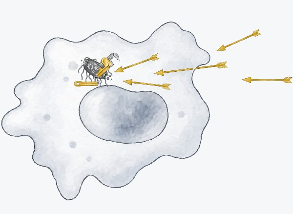
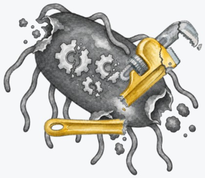

The birth of a new treatment paradigm
We describe not merely a theoretical idea, but a real scientific achievement. At Unison Medicines, we have developed first-in-class, orally bioavailable small molecules which target an enzyme critical to bacterial defense. The concept works: we have demonstrated proof of principle in animal models of infection (see Figure 5). Moreover, our bacterial defense disablers achieve the ideal profile, succeeding in each of the three characteristics where antibiotics fail. A single molecular entity, designated as UNI-568911, generated the data below.
- iUNI-568911 has no discernible impact on the healthy microbiome, demonstrating the selectivity achieved by working with the immune system against pathogens only (see Figure 6).
- iiUNI-568911 accumulates in the intracellular reservoirs where many of the most intractable pathogenic bacteria hide (see Figure 7). As described above, many of the most virulent pathogens invade and co-opt immune cells. Inside, they raid host nutrients and can shield themselves from antibiotics and the action of other immune system responses. UNI-568911 flips the advantage back to the immune system. Immune cells actively take up UNI-568911, where it then concentrates inside specialized killing vesicles (lysosomes)—the very location that pathogens themselves hide (see Figure 8). The drug goes to the exact site where it is needed to weaken bacterial defenses and restore the immune cells from co-opted hiding places back into pathogen-killing machines.
- iiiUNI-568911 both makes the problem of antibiotic resistance by current mechanisms largely irrelevant, and minimizes the rate of resistance development towards itself. UNI-568911 uses a mechanism that bacteria have not encountered before. Thus, UNI-568911 works whether the pathogen has previously developed resistance, or not. The graph below demonstrates nearly identical performance of UNI-568911 against a susceptible and multi-drug-resistant strain of E. coli(see Figure 9). And, because it is so much more selective than 20th Century antibiotics (see point 1), it puts far less pressure on the bacteria in the healthy microbiome, which we anticipate will slow the development of resistance to UNI-568911 itself. Finally, because it is new to the world, there are no pre-existing resistance genes in nature, which is a key vulnerability of current antibiotics adapted from natural sources and another reason we expect slow resistance development towards UNI-568911. The graph below demonstrates nearly identical performance of UNI-568911 against a susceptible and multi-drug-resistant strain of E. coli, which uses a laboratory damaging agent as a surrogate for damage induced by the immune system (see Figure 9).


Bacterial defense disablers will serve an enormous market
Novel antibiotics developed over the last decade have arguably been the biopharmaceutical industry’s worst-performing commercial products. As evidence for this, large developers have exited the field, and the specialist developers who have commercialized novel antibiotics have generally gone bankrupt (e.g., Achaogen, Aradigm, Melinta, Nabriva, Iterum, and others). Frequently cited reasons for antibiotic commercial underperformance include the widespread use of low-cost generic alternatives to new agents, which limits both pricing power and patient numbers; and short courses of treatment compared to chronic conditions, which limits revenue further.3,4
The disabling defenses approach treats needs unmet by antibiotics, and therefore not subject to competition with cheap, generic antibiotics. The advantages described above—selectivity for pathogens; sparing the microbiome; killing bacteria where they hide; sidestepping antibiotic resistance—allow for the treatment of devastating and costly diseases in the many cases when antibiotics routinely fail.
Urinary tract infections (UTIs) are extremely common with 11% of American,5,6 and a similar percentage of British women developing one every year.7 Although the majority of UTIs respond to current antibiotics, a meaningful minority of infections do not. Chronic urinary tract infection (UTI) is a debilitating, life altering condition currently with no good solution. The primary reason for this is that the pathogen can embed itself into bladder cells, where it can hide from antibiotics and the immune system. 8–14 We estimate that UTI infections will become chronic and unresponsive in 3.3 million American and 660,000 British women. As an initial use case, targeting chronic UTIs, which represent a multi-billion dollar market, is a very promising strategy.
We understand and can solve chronic UTIs. The Unison molecule, UNI-568911, is an ideal treatment because of its oral bioavailability, its gentleness to the microbiome, its activity against E. coli and other Gram-negative pathogens commonly involved in UTI, and its ability to reach the reservoirs in bladder cells where the pathogen hides. We recently generated proof of principle with UNI-568911 in a mouse model of chronic UTI. We see a multi-billion-dollar market for such a drug.
But the scope of the market for our compounds is far larger:
- iThe next, highly valuable market segment we will pursue is respiratory infection, which conventional antibiotics fail patients at an alarming rate with severe consequences, including high mortality. These infections include streptococcal pharyngitis (strep throat), pertussis (whooping cough), pneumococcal pneumonia, tuberculosis (TB), epiglottitis, atypical pneumonia (walking pneumonia) and diphtheria. We calculate the size of the Community Acquired Pneumonia market alone to be somewhere in the range of $9B.
- iiBiothreat pathogens—bacteria that pose a national security risk—often hide in intracellular niches. All five priority bacterial biothreat pathogens are either intracellular: Y. pestis (plague),15 F. tularensis (a highly infectious bacterium that causes a severe zoonotic disease called tularemia),16 B. mallei (glanders, an often-fatal respiratory disease),17 and B. pseudomallei (melioidosis, a life-threatening infection)18 or have significant intracellular components as part of their infectious lifecycle, such as B. anthracis (anthrax)19. We think we can address several of these, too, with Unison’s technology.
- iiiOur most successful immuno-oncology medicines require a healthy microbiome to function properly. Patients who receive antibiotics at the beginning of their PD-1 inhibitor therapies or CAR-T therapies experience dramatically worse outcomes, yet these patients are at high risk of infection.20,21. Bacterial defense disablers offer a way out of the paradox. They could be used prophylactically to prevent infection and reduce the need for patients to receive gut-damaging antibiotics. Value for this sort of treatment could easily surpass that of Neupogen/Neulasta, which sold over $4B per year at peak and is now a mainstay of chemotherapy protocols. Mechanistically, Neupogen/Neulasta and related medicines are of little value to immuno-oncology patients. We see a future where bacterial defense disablers are a cornerstone of 21st Century cancer care.
- ivLivestock producers desperately need antibiotic alternatives. Regulators strongly prefer “antibiotic-free” meat products, and consumers will pay a premium. But intensive farming practices necessary to achieve unit cost efficiencies mean that, in practice, it has been hard for producers to avoid antibiotic use. Even so, antibiotics have only moderate efficacy. Defense disablers could be what regulators, consumers, and producers all want: a non-antibiotic way of effectively dealing with infection. As it happens, many of the most valuable livestock health indications involve intracellular pathogens hiding from the immune system: mastitis in dairy cows,22 Lawsonia in hogs,23 and Piscirickettsiosis in Chilean salmon (a $700M annual problem).24,25
- vPerhaps most surprisingly, bacterial diseases are devastating crop agriculture. New bacterial diseases afflicting crops emerge seemingly every year. Bacteria and their insect vectors thrive in warmer environments, and the rise of climate change appears to be driving an explosion in new diseases, many affecting premium crops.26 Agrichemical companies have little to offer and most of these diseases are considered incurable. A particularly salient example, citrus greening disease, has infected nearly all of Florida’s orange production capacity, which has declined 96% over the last 20 years (see Figure 10),27 effectively ending the citrus industry in that once-productive state. Infection rates are now rising in other major global citrus producers, including California and Brazil. There is no cure.
But fortunately, plants do have immune systems28 and bacterial defense disablers could work in crops to overcome disease. Bacterial defense disablers could be an ideal, environmentally friendly way to address the multi-billion-dollar need for bacterial crop protection. Because they are not antibiotics, they would not have the same environmental damage potential as using antibiotics directly on our crops (which is the current “solution” for citrus greening). Here, too, this is not a theoretical idea: Unison has demonstrated that UNI-568911 works at least as well in clearing citrus greening bacteria, Candidatus Liberibacter asiaticus (CLas), as the antibiotic currently in use (see Figure 11).29
The field of bacterial disease treatment is ripe for disruption. A better solution in any of these fields could command a multi-billion-dollar market. A platform technology that can be proven in one field and then expanded into others will produce a category-defining company.
Beyond the markets, bacterial defense disablers could make a major impact on global public health. Unison’s technology could be deployed efficiently to low- and middle-income countries, because our small molecules can be manufactured and distributed at scale with a highly competitive cost structure.
Our ambition is to redefine infection treatment in the 21st Century, the way antibiotics did in the 20th.